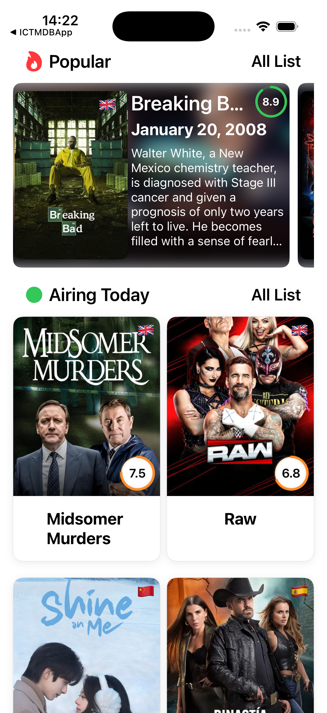
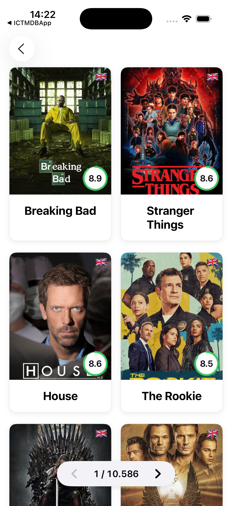
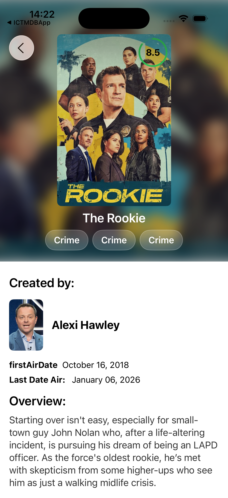

ICTMDBApp
Advanced iOS Bootcamp by kampus.academy
It is a modular application built using a list of TMDB TV shows.
Version/SwiftUI



TrendyolGoByUberEatsBase
A comprehensive infrastructure study combining Server-Driven UI (SDUI) with a highly scalable Modular VIPER architecture. Backend developed using Spring Boot and PostgreSQL.
Feastly
This application is a food ordering application. Made using Tuist.The API was written with SpringBoot and MongoDB
swift uikit viper unittest tuistHPCharacterListModulerApp
Modular SwiftUI application designed with clean architecture principles.
TaksiGo
Application that allows users to track available taxis on the map. Built with a modular architecture. Backend developed using Spring Boot and PostgreSQL.
VolatusiOS
Flight ticket booking application. Backend developed using Spring Boot and PostgreSQL.
Modular Application with SwiftUI and SPM – Part 1
Introduction to building a modular SwiftUI app using Swift Package Manager.
Modular Application with SwiftUI and SPM – Part 2
Deep dive into a modular SwiftUI app using MVVM and Swinject.
Swift Debugging – Part 0
Debugging incorrect and buggy Swift code obtained from open-source repositories and AI-generated snippets.
Swift Debugging – Part 1
Debugging incorrect and buggy Swift code obtained from open-source repositories and AI-generated snippets.
Using NSCache in Swift
Optimizing memory management and performance when loading images from URLs.
Associatedtype Example in Swift
Practical usage of associatedtype in Protocol-Oriented Programming.
GenericCollectionViewKit
A lightweight and reusable framework for UICollectionView written in Swift. It provides a generic, type-safe, and highly customizable way to manage collection view data, section headers, delegates, and layouts. Compatible with Swift 5.9+ / iOS 14+.
✨ Features
- ✅ Generic and reusable UICollectionViewDataSource
- ✅ Generic and reusable UICollectionViewDelegate
- ✅ Generic and reusable UICollectionViewCompositionalLayout
- ✅ Clean protocol-oriented architecture
- ✅ Supports dynamic section headers (titles + buttons)
- ✅ Strongly typed, type-safe, and fully generic
- ✅ Predefined layout templates for common scenarios
- ✅ Minimal boilerplate with default implementations
📦 Feature Overview
| Feature | Description |
|---|---|
| 🧩 Type Safety | Strong typing everywhere ensures no AnyObject confusion |
| ⚡ Reusable | Write once, reuse across multiple collection views, headers, delegates, and layouts |
| 🧼 Clean Architecture | Separates data, layout, delegate, and UI logic |
| 🧠 Extensible | Easily extend with default methods, custom buttons, or layout templates |